Museo de Textil de Oaxaca
PRODUCTOS ESCOLARES ARTESANALES
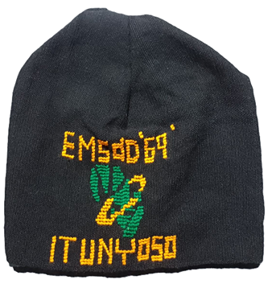
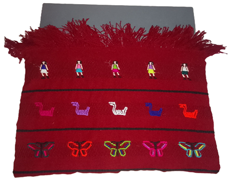
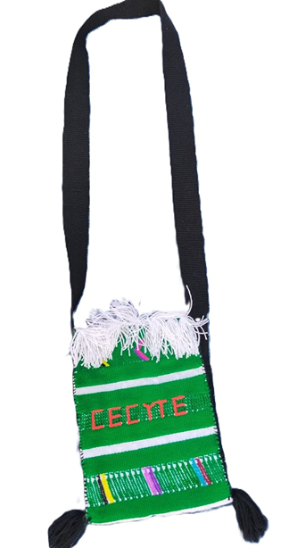
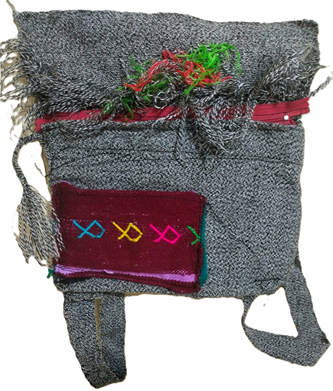
FUNDA PARA LAPTOP
Elaborado con colores rojo y negro, con bordados de figuras humanas, patos y mariposas de distintos colores; además, cuenta con flecos. Presenta un tejido sencillo en telar de cintura.
MOCHILA DE ESPALDA
Mochila pequeña tejida en color gris, con un bolsillo frontal en tono vino que incluye cierre y figuras de mariposas cola de pescado en diferentes colores. Presenta detalles bordados y acabados artesanales que resaltan su diseño tradicional. Está elaborada con tejido sencillo en telar de cintura
BOLSA(MORRAL)
Bolso tejido en color verde con correa larga negra y flecos decorativos en color blanco. Presenta figuras de mariposas de pájaro en diferentes colores y el nombre “CECYTE” en el centro, resaltando su diseño tradicional y llamativo. Está elaborado con tejido original en telar de cintura.
GORRO
Tejido de color negro con bordados del logotipo del CECyTE y el nombre de la escuela. Está elaborado a mano con técnica sencilla tradicional, resaltando su diseño artesanal y decorativo.
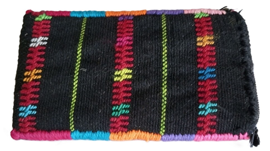
FUNDA PARA CELULAR
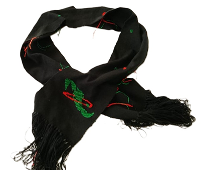
BUFANDA
Bufanda artesanal de color negro con bordados del logotipo del CECyTE en tonos verde y anaranjado. Presenta detalles tejidos de forma sencilla y flecos en los extremos que realzan su diseño decorativo. Está elaborada con técnica sencilla en telar de cintura, resaltando su estilo tradicional y artesanal.
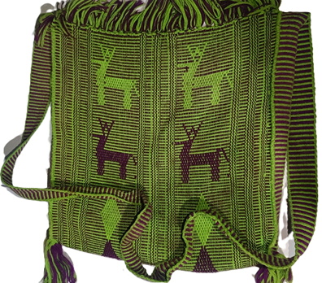
BOLSA (MORRAL)
Tejida en colores verde y morado con figuras decorativas de venados y rombos . Está elaborada con tejido sencillo en telar de cintura y bordado de estilo artesanal.

Museo de Textil de Oaxaca

Cecyte Oaxaca

Cecyteo Emsad Itunyoso
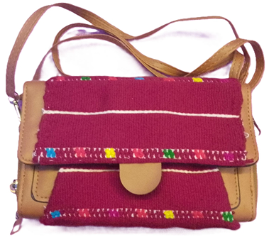
BOLSA CRUZADA
Bolso artesanal de color vino con figuras de mariposas de hoja de Mazorca y franjas blancas que resaltan su diseño tradicional. Incluye tapa frontal, broche de cierre y correa larga color café, combinando tela tejida con material tipo piel. Está elaborado con tejido original en telar de cintura.
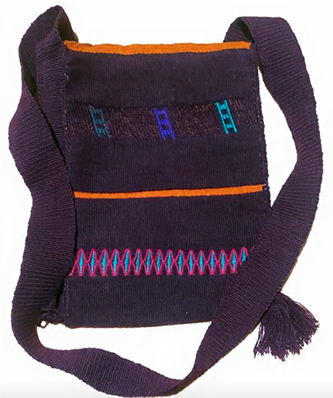
BOLSA CRUZADA
Elaborado en colores morado y anaranjado, contiene figuras de escaleras y mariposas llamadas (Chabi Tiru) en diferentes colores. Está tejido con técnica original en telar de cintura, resaltando su elaboración artesanal. Cuenta con una correa larga tejida para colgar al hombro.
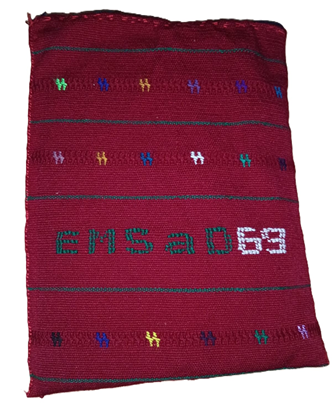
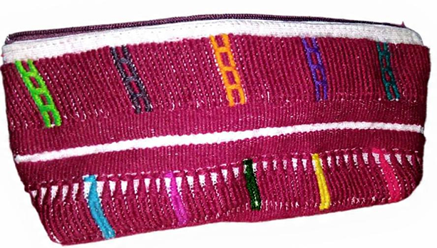
LAPICERA
Lapicera artesanal de color vino con cierre blanco en la parte superior. Tejida con figuras de escaleras y mariposas de pájaro en colores como amarillo, azul, verde y rosa. Elaborado con tejido original.
FUNDA PARA LAPTOP
Elaborada en colores de vino y negro, con figuras de mariposas de hoja de Mazorca y el nombre de la institución resaltando en el diseño. Está tejida con técnica sencilla.
VOLANTE PARA CARRO
Cubre volante artesanal de color rojo y blanco con bordados pequeños de colores como verde y amarillo. Presenta un tejido de figuras de mariposas de chicahuaxtla, echo a mano, con un tejido sencillo.
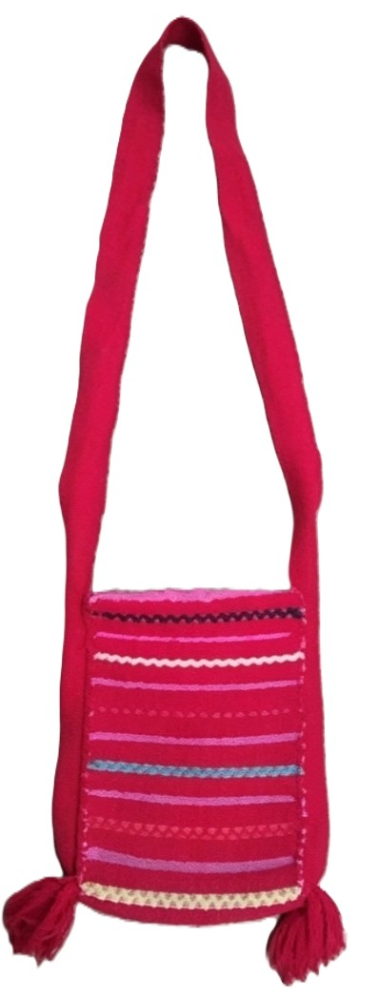
FUNDA PARA CELULAR
Elaborado en colores rojo y rosa, presenta un diseño artesanal con figuras de mariposas de Mazorca elegida a mano(Chaávi Mií Nacuiraá) en diferentes colores. Cuenta con una correa larga tejida para colgar al hombro y está elaborado con tejido original, resaltando su estilo tradicional y colorido.
LAPICERA
Elaborado en colores rojo y blanco, presenta figuras de mariposas de Chicahuaxtla, mariposas de cruz (Cháavi Rcusií) y mariposas de guaje, elaborada en tejido sencillo en telar de cintura. Además, contiene cierre y bordado de costura en ambos extremos, resaltando su elaboración artesanal.
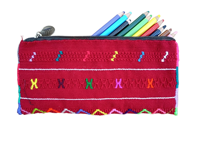
BOLSA DE MANO
Elaborada en colores vino y negro, presenta un diseño de mariposas de hoja de Marzorca en diferentes colores. Cuenta con asas forradas en tonos azul turquesa y rosa, además de acabados cosidos en los bordes que resaltan su elaboración artesanal. Está tejida con técnica sencilla en telar de cintura, lo que le brinda un estilo tradicional y elegante.
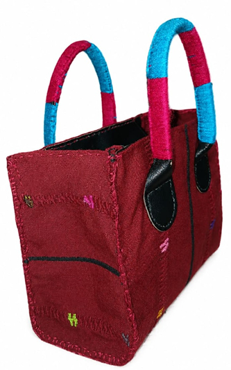